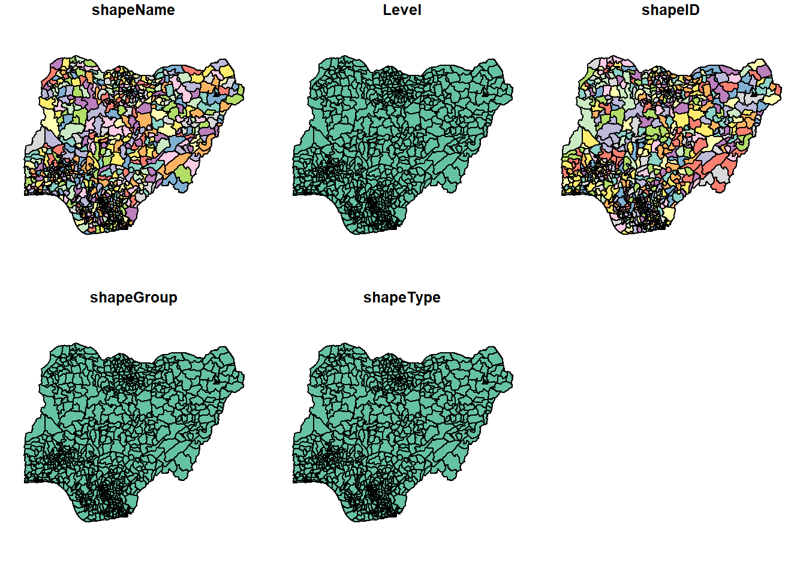

pacman::p_load(sf, spdep, tmap, tidyverse)Take-home Exercise 1
Geospatial Analytics for Social Good
Objective
To reveal the geospatial patterns of Not Functional water points in Nigeria using global and local spatial association techniques.
Loading R Packages
Importing Data into R
The Data


As the size of the CSV file has exceeded the GitHub limitation of 100 MB, it shall not be included in the Commit and Push to GitHub and Netlify. The wrangled data derived from the following steps for the subsequent geospatial analysis will be exported as a RDS file, and this will be pushed to GitHub and Netlify instead.
Importing shapefile and Transforming to EPSG 26391 Map Projection
nigeria_sf <- st_read(dsn="data/Nigeria", layer="geoBoundaries-NGA-ADM2")Reading layer `geoBoundaries-NGA-ADM2' from data source
`D:\SMU\ISSS624 - Applied Geospatial Analytics\exercises\leecheetian\ISSS624\Take-home_Ex\Take-home_Ex1\data\Nigeria'
using driver `ESRI Shapefile'
Simple feature collection with 774 features and 5 fields
Geometry type: MULTIPOLYGON
Dimension: XY
Bounding box: xmin: 2.668534 ymin: 4.273007 xmax: 14.67882 ymax: 13.89442
Geodetic CRS: WGS 84plot(nigeria_sf)
glimpse(nigeria_sf)Rows: 774
Columns: 6
$ shapeName <chr> "Aba North", "Aba South", "Abadam", "Abaji", "Abak", "Abaka…
$ Level <chr> "ADM2", "ADM2", "ADM2", "ADM2", "ADM2", "ADM2", "ADM2", "AD…
$ shapeID <chr> "NGA-ADM2-72505758B79815894", "NGA-ADM2-72505758B67905963",…
$ shapeGroup <chr> "NGA", "NGA", "NGA", "NGA", "NGA", "NGA", "NGA", "NGA", "NG…
$ shapeType <chr> "ADM2", "ADM2", "ADM2", "ADM2", "ADM2", "ADM2", "ADM2", "AD…
$ geometry <MULTIPOLYGON [°]> MULTIPOLYGON (((7.401109 5...., MULTIPOLYGON (…nigeria26391 <- st_transform(nigeria_sf, crs = 26391)
nigeria26391Simple feature collection with 774 features and 5 fields
Geometry type: MULTIPOLYGON
Dimension: XY
Bounding box: xmin: 28879.72 ymin: 30292.37 xmax: 1343798 ymax: 1094244
Projected CRS: Minna / Nigeria West Belt
First 10 features:
shapeName Level shapeID shapeGroup shapeType
1 Aba North ADM2 NGA-ADM2-72505758B79815894 NGA ADM2
2 Aba South ADM2 NGA-ADM2-72505758B67905963 NGA ADM2
3 Abadam ADM2 NGA-ADM2-72505758B57073987 NGA ADM2
4 Abaji ADM2 NGA-ADM2-72505758B61968000 NGA ADM2
5 Abak ADM2 NGA-ADM2-72505758B39432389 NGA ADM2
6 Abakaliki ADM2 NGA-ADM2-72505758B36739173 NGA ADM2
7 Abeokuta North ADM2 NGA-ADM2-72505758B86358915 NGA ADM2
8 Abeokuta South ADM2 NGA-ADM2-72505758B56925175 NGA ADM2
9 Abi ADM2 NGA-ADM2-72505758B1616690 NGA ADM2
10 Aboh-Mbaise ADM2 NGA-ADM2-72505758B78555816 NGA ADM2
geometry
1 MULTIPOLYGON (((552560.3 12...
2 MULTIPOLYGON (((545153.6 12...
3 MULTIPOLYGON (((1245549 106...
4 MULTIPOLYGON (((510602.3 57...
5 MULTIPOLYGON (((598086 1218...
6 MULTIPOLYGON (((663801.7 25...
7 MULTIPOLYGON (((81132.88 37...
8 MULTIPOLYGON (((98464.54 34...
9 MULTIPOLYGON (((635478 2187...
10 MULTIPOLYGON (((543608.8 15...Importing Aspatial Data
WPdx_csv <- read_csv("data/WPdx+/Water_Point_Data_Exchange_-_Plus__WPdx__.csv")Warning: One or more parsing issues, call `problems()` on your data frame for details,
e.g.:
dat <- vroom(...)
problems(dat)Rows: 406566 Columns: 70
── Column specification ────────────────────────────────────────────────────────
Delimiter: ","
chr (43): #source, #report_date, #status_id, #water_source_clean, #water_sou...
dbl (23): row_id, #lat_deg, #lon_deg, #install_year, #fecal_coliform_value, ...
lgl (4): #rehab_year, #rehabilitator, is_urban, latest_record
ℹ Use `spec()` to retrieve the full column specification for this data.
ℹ Specify the column types or set `show_col_types = FALSE` to quiet this message.Data Wrangling
Retrieving data for Nigeria only and where functional status is known.
nigeria_data <- WPdx_csv %>%
filter(`#country_name` == "Nigeria") %>%
drop_na(`#status`) %>%
group_by(`#adm2`) %>%
mutate(`functionality` = case_when(grepl("^Functional", `#status`)
~ "Functional",
TRUE ~ "Non-functional")) %>%
count(`functionality`) %>%
pivot_wider(names_from = `functionality`, values_from = n) %>%
mutate(`f2nfrate` = ifelse(!is.na(`Functional`) & !is.na(`Non-functional`),
`Functional` / `Non-functional`,
ifelse(!is.na(`Functional`),
`Functional`, 0)))nigeria_data# A tibble: 749 × 4
# Groups: #adm2 [749]
`#adm2` Functional `Non-functional` f2nfrate
<chr> <int> <int> <dbl>
1 Aba South 33 16 2.06
2 Abaji 33 36 0.917
3 Abak 22 25 0.88
4 Abakaliki 71 34 2.09
5 Abeokuta North 11 8 1.38
6 Abeokuta South 75 39 1.92
7 Abi 79 60 1.32
8 Abia North 6 28 0.214
9 Aboh-Mbaise 18 26 0.692
10 Abua/Odual 25 13 1.92
# … with 739 more rowsThe following assumptions were taken in the calculation of the Functional-to-Non-functional ratio, f2nfrate, of the water points in each Local Government Area (LGA):
For LGAs with both Functional and Non-functional water point records, the f2nfrate is calculated by the count of the former divided by the count of the latter.
For LGAs with only Functional water point records but no Non-functional water point records, the f2nfrate is assigned the count of the Functional water points (ie. assuming the Non-functional water point count is 1), as it is not feasible to divide by 0.
For LGAs with only Non-functional water point records and no Functional water point records, the f2nfrate is assigned as 0.
Joining the Aspatial Data and the Geospatial Data
nigeria_WPdx <- left_join(nigeria26391, nigeria_data,
by = c("shapeName" = "#adm2"))nigeria_WPdxSimple feature collection with 774 features and 8 fields
Geometry type: MULTIPOLYGON
Dimension: XY
Bounding box: xmin: 28879.72 ymin: 30292.37 xmax: 1343798 ymax: 1094244
Projected CRS: Minna / Nigeria West Belt
First 10 features:
shapeName Level shapeID shapeGroup shapeType
1 Aba North ADM2 NGA-ADM2-72505758B79815894 NGA ADM2
2 Aba South ADM2 NGA-ADM2-72505758B67905963 NGA ADM2
3 Abadam ADM2 NGA-ADM2-72505758B57073987 NGA ADM2
4 Abaji ADM2 NGA-ADM2-72505758B61968000 NGA ADM2
5 Abak ADM2 NGA-ADM2-72505758B39432389 NGA ADM2
6 Abakaliki ADM2 NGA-ADM2-72505758B36739173 NGA ADM2
7 Abeokuta North ADM2 NGA-ADM2-72505758B86358915 NGA ADM2
8 Abeokuta South ADM2 NGA-ADM2-72505758B56925175 NGA ADM2
9 Abi ADM2 NGA-ADM2-72505758B1616690 NGA ADM2
10 Aboh-Mbaise ADM2 NGA-ADM2-72505758B78555816 NGA ADM2
Functional Non-functional f2nfrate geometry
1 NA NA NA MULTIPOLYGON (((552560.3 12...
2 33 16 2.0625000 MULTIPOLYGON (((545153.6 12...
3 NA NA NA MULTIPOLYGON (((1245549 106...
4 33 36 0.9166667 MULTIPOLYGON (((510602.3 57...
5 22 25 0.8800000 MULTIPOLYGON (((598086 1218...
6 71 34 2.0882353 MULTIPOLYGON (((663801.7 25...
7 11 8 1.3750000 MULTIPOLYGON (((81132.88 37...
8 75 39 1.9230769 MULTIPOLYGON (((98464.54 34...
9 79 60 1.3166667 MULTIPOLYGON (((635478 2187...
10 18 26 0.6923077 MULTIPOLYGON (((543608.8 15...write_rds(nigeria_WPdx, "data/rds/nigeria_WPdx.rds")nigeria_WPdx <- read_rds("data/rds/nigeria_WPdx.rds")nigeria_WPdxSimple feature collection with 774 features and 8 fields
Geometry type: MULTIPOLYGON
Dimension: XY
Bounding box: xmin: 28879.72 ymin: 30292.37 xmax: 1343798 ymax: 1094244
Projected CRS: Minna / Nigeria West Belt
First 10 features:
shapeName Level shapeID shapeGroup shapeType
1 Aba North ADM2 NGA-ADM2-72505758B79815894 NGA ADM2
2 Aba South ADM2 NGA-ADM2-72505758B67905963 NGA ADM2
3 Abadam ADM2 NGA-ADM2-72505758B57073987 NGA ADM2
4 Abaji ADM2 NGA-ADM2-72505758B61968000 NGA ADM2
5 Abak ADM2 NGA-ADM2-72505758B39432389 NGA ADM2
6 Abakaliki ADM2 NGA-ADM2-72505758B36739173 NGA ADM2
7 Abeokuta North ADM2 NGA-ADM2-72505758B86358915 NGA ADM2
8 Abeokuta South ADM2 NGA-ADM2-72505758B56925175 NGA ADM2
9 Abi ADM2 NGA-ADM2-72505758B1616690 NGA ADM2
10 Aboh-Mbaise ADM2 NGA-ADM2-72505758B78555816 NGA ADM2
Functional Non-functional f2nfrate geometry
1 NA NA NA MULTIPOLYGON (((552560.3 12...
2 33 16 2.0625000 MULTIPOLYGON (((545153.6 12...
3 NA NA NA MULTIPOLYGON (((1245549 106...
4 33 36 0.9166667 MULTIPOLYGON (((510602.3 57...
5 22 25 0.8800000 MULTIPOLYGON (((598086 1218...
6 71 34 2.0882353 MULTIPOLYGON (((663801.7 25...
7 11 8 1.3750000 MULTIPOLYGON (((81132.88 37...
8 75 39 1.9230769 MULTIPOLYGON (((98464.54 34...
9 79 60 1.3166667 MULTIPOLYGON (((635478 2187...
10 18 26 0.6923077 MULTIPOLYGON (((543608.8 15...Plotting Thematic Map of Water Point Data
fmap <- tm_shape(nigeria_WPdx) +
tm_polygons("Functional", title = "Functional count",
style = "jenks", palette = "Blues", n = 6, border.alpha = 0.5) +
tm_layout(legend.outside = TRUE)
nfmap <- tm_shape(nigeria_WPdx) +
tm_polygons("Non-functional", title = "Non-functional count",
style = "jenks", palette = "Oranges", n = 6, border.alpha = 0.5) +
tm_layout(legend.outside = TRUE)
f2nfmap <- tm_shape(nigeria_WPdx) +
tm_polygons("f2nfrate", title = "Functional to Non-functional ratio",
style = "jenks", palette = "Greens", n = 6, border.alpha = 0.5) +
tm_layout(legend.outside = TRUE)
tmap_arrange(fmap, nfmap, f2nfmap, ncol=1)
It appears the functional water points are mostly concentrated in the northern regions of Nigeria, and corresponds to a higher functional-to-non-functional ratio. The central and southern regions see a higher number of non-functional water points and lower functional-to-non-functional ratio in contrast.
Cluster and Outlier Analysis
Computing Contiguity Spatial Weights
wm_q <- poly2nb(nigeria_WPdx, queen = TRUE)
summary(wm_q)Neighbour list object:
Number of regions: 774
Number of nonzero links: 4440
Percentage nonzero weights: 0.7411414
Average number of links: 5.736434
1 region with no links:
86
Link number distribution:
0 1 2 3 4 5 6 7 8 9 10 11 12 14
1 2 14 57 125 182 140 122 72 41 12 4 1 1
2 least connected regions:
138 560 with 1 link
1 most connected region:
508 with 14 linksRow-Standardized Weights Matrix
rswm_q <- nb2listw(wm_q, style = "W", zero.policy = TRUE)
print(rswm_q, zero.policy = TRUE)Characteristics of weights list object:
Neighbour list object:
Number of regions: 774
Number of nonzero links: 4440
Percentage nonzero weights: 0.7411414
Average number of links: 5.736434
1 region with no links:
86
Weights style: W
Weights constants summary:
n nn S0 S1 S2
W 773 597529 773 285.0658 3198.414Global Spatial Autocorrelation: Moran’s I test
moran.test(nigeria_WPdx$f2nfrate,
listw = rswm_q,
zero.policy = TRUE,
na.action = na.omit)
Moran I test under randomisation
data: nigeria_WPdx$f2nfrate
weights: rswm_q
omitted: 1, 3, 16, 30, 37, 40, 58, 62, 63, 91, 112, 136, 145, 146, 150, 186, 187, 188, 202, 210, 211, 212, 224, 232, 235, 244, 250, 261, 262, 268, 271, 276, 284, 287, 296, 313, 328, 335, 341, 342, 357, 364, 365, 368, 385, 387, 394, 396, 397, 400, 406, 416, 421, 424, 439, 447, 460, 473, 475, 478, 491, 492, 496, 509, 521, 525, 526, 529, 542, 548, 553, 566, 567, 570, 572, 591, 622, 623, 624, 626, 627, 641, 647, 659, 728, 732, 736, 757, 759, 770 n reduced by no-neighbour observations
Moran I statistic standard deviate = 7.8123, p-value = 2.808e-15
alternative hypothesis: greater
sample estimates:
Moran I statistic Expectation Variance
0.1753148604 -0.0014662757 0.0005120523 The positive Moran’s I value of 0.1753 and low p-value of < 0.05 suggest that there is clustering and positive spatial autocorrelation of the functional-to-non-functional ratio of the water points among the LGAs, and the null hypothesis of spatial randomness is rejected.